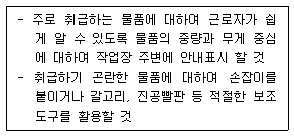
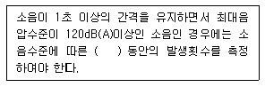
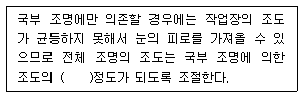

산업위생관리기사 (2007-08-05 기출문제)
1과목: 산업위생학개론
1. 다음 중 미국국립산업안전보건연구원(NIOSH)에서 정한 중량물 취급작업에 대한 기준의 적용범위가 가장 거리가 먼 것은?
- 박스인 경우는 손잡이가 있어야 한다.
- 빠른 속도로 들어올리는 작업을 기준으로 한다.
- 물체의 폭이 75cm 이하로서 두 손을 적당히 벌리고 작업할 수 있어야 한다.
- 작업장 내의 온도가 적절해야 한다.
(정답률: 81%)

2. 피로의 현상과 피로조사방법 등을 나타낸 내용 중 가장 관계가 먼 것은?
- 피로현상은 개인차가 심하므로 직업에 대한 개체의 반응을 수치로 나태내기가 어렵다.
- 노동수명(turn over ratio)으로서 피로를 판정하는 것은 적합지 않다.
- 피로조사는 피로도를 판가름하는데 그치지 않고 작업방법과 교대제 등을 과학적으로 검토할 필요가 있다.
- 작업시간이 등차급수적으로 늘어나면 피로회복에 요하는시간은 등비급수적으로 증가하게 된다
(정답률: 60%)
3. 산업보건기준에 관한 규칙상 사업주는 몇 Kg 이상의 중량을 들어올리는 작업에 근로자를 종사하도록 할 때 다음과 같은 조치를 취하여야 하는가?

- 15
- 10
- 5
- 3
(정답률: 62%)
4. 다음 중 산업피로의 예방대책에 대한 설명이 잘못된 것은?
- 불필요한 동작을 피하고 에너지 소모를 적게 한다.
- 작업과정에 따라 적절한 휴식시간을 삽입한다.
- 작업시간 전후에 간단한 체조를 한다.
- 동적인 작업은 모두 정적인 작업으로 전환한다.
(정답률: 90%)
5. 육체적 작업능력(PWC)이 18kcal/min인 근로자가 1일 8시간 동안 물체를 운반하고 있다. 이 때 작업대사량은 8kcal/min이고 휴식시의 대사량이 3kcal/min 이라면 이 근로자의 시간당 휴식시간과 작업시간의 배분으로 가장 적절한 것은? (단, Hertig(1992) 식을 적용한다.)
- 매시간 약 35분 휴식을 취하고 25분 작업한다.
- 매시간 약 32분 휴식을 취하고 28분 작업한다.
- 매시간 약 27분 휴식을 취하고 33분 작업한다.
- 매시간 약 24분 휴식을 취하고 36분 작업한다.
(정답률: 75%)
6. 다음 중 역사상 최초로 기록된 직업병은?
- 광산에서의 납중독
- 광산에서의 폐질환
- 굴뚝검댕에 의한 음낭암
- 금속처리시 발생되는 증기(흄)에 따른 중독
(정답률: 77%)
7. 다음 중 산업피로의 종류에 관한 설명으로 틀린 것은?
- 국소피로와 전신피로는 피로를 나타내는 신체의 부위가 어니 정도인지에 따라 상대적으로 구분된다.
- 보통 피로는 하루 저녁 잠을 잘 자고나면 완전히 회복 될 수 있다.
- 정신적 피로나 육제적 피로가 각각 단독으로 생기는 일은 거의 없다.
- 곤비는 과로의 축적으로 단기간 유식으로 회복될 수 있다.
(정답률: 76%)
8. 다음 중 작업적성에 대한 생리적 적성검사 항목으로 가장 적합한 것은?
- 감각기능 검사
- 지능검사
- 지각동장 검사
- 인성검사
(정답률: 63%)
9. 산업안전보건법에서 정의하는 다음 용어에 대한 설명으로 틀린 것은?
- 산업재해 - 근로자가 업무에 관계되는 건설물, 설비, 원재료, 가스, 증기, 분진 등에 의하거나 작업 기타 업무에 기인하여 사망 또는 부상하거나 질병에 이환되는 것을 말한다.
- 작업환경측정 - 작업환경의 실태를 파악하기 위하여 해당 작업장에 근로자 또는 그 대행자가 측정계획을 수립, 시행하는 것을 말한다.
- 안전 ㆍ 보건 진단 - 산업재해를 예방하기 위하여 잠재적 위험성의 발견과 그 개선의 수립을 목적으로 노동부장관이 지정하는 자가 실시하는 조사, 평가를 말한다.
- 중대재해 - 산업재해 중 사망 등 재해의 정도가 심한 것으로서 노동부령이 정하는 재해를 말한다.
(정답률: 78%)
10. 연평균 근로자 수가 200명인 사업장에서 1년에 12명의 재해자가 발생하였으며 연근로시간이 1인당 2500시간 이었다. 이 사업장의 연천인율은 얼마인가?
- 24
- 36
- 48
- 60
(정답률: 75%)
11. TLV-TWA(Time-Weighted Average)의 허용농도보다 3배가 높은 경우 권고되는 노출시간은? (단, ACGIH 에서의 근로자 노출의 상한치와 노출시간에 대한 권고 기준이다.)
- 10분이하
- 20분이하
- 30분이하
- 40분이하
(정답률: 72%)
12. 미국산업위생학술원(AAIH)에서 채택한 산업위생전문가로서의 책임에 해당되지 않는 것은?
- 성실성과 학문적 실력에서 최고 수준을 유지한다.
- 과학적 방법의 적용과 자료 해석의 객관성을 유지한다.
- 전문분야로서의 산업위생을 학문적으로 발전시킨다.
- 직업병을 평가하고 관리한다.
(정답률: 85%)
13. 전신피로 정도를 평가하기 위한 다음의 회복기 심박수 측정 수치 중 적절한 것은?
- 작업 종료 후 90~120초 사이의 평균 맥박수
- 작업 종료 후 120~150초 사이의 평균 맥박수
- 작업 종료 후 150~180초 사이의 평균 맥박수
- 작업 종료 후 180~210초 사이의 평균 맥박수
(정답률: 75%)
14. 작업시 소모되는 대사량이 시간당 350~500Kcal 였다면 미국정부산업위생전문가협의회 (ACGIH)에서 구분한 작업강도로 가장 적절한 것은?
- 경미한 작업
- 경작업
- 중등도 작업
- 심한작업
(정답률: 60%)
15. 다음 중 요통발생에 관여하는 요인을 가장 올바르게 설명한 것은?
- 물체와 몸의 거리가 멀 경우 지렛대의 역할을 하는 L2/S2 디스크에 많은 부담을 주게 된다.
- 일반적으로 요통은 장기간 반복하여 무리한 동작을 할 때 보다 한번의 과격한 충격에 의하여 발생하는 경우가 많다.
- 버스 운전기사, 이용사, 미용사 등의 작업인에게서 요통이 많이 발생하는 것은 부적절한 자세에 기인한다.
- 가벼운 물체의 경우 어떠한 작업방법을 선택하여도 무리가 가지 않는다.
(정답률: 73%)
16. 다음 중 직업성 질환에 대한 설명으로 틀린 것은?
- 직업성 질환과 일반질환은 그 한계가 뚜렷하다.
- 직업성 질환이란 어떤 작업에 종사함으로써 발생하는 업무상 질병을 말한다.
- 직업성 질환은 재해성 질환과 직업병으로 나눌 수 있다.
- 직업병은 저농도로 장시간 걸쳐 반복노출로 생긴 질병을 말한다.
(정답률: 81%)
17. 다음 중 작업대사율에 관한 설명으로 틀린 것은?
- 중등 작업은 지적 활동을 포함한다.
- 강작업의 작업대사율은 2~4인 경우를 말한다.
- 중작업은 작업대사율이 4~7인 경우를 말하며 수시로 휴식시간을 갖는 것이 적합하다.
- 작업대사율이 4를 계속작업의 한계로 보고 있으며 이를 넘으면 수시로 휴식시간을 부여하여야 한다.
(정답률: 53%)
18. 다음 중 산업재해를 평가하기 위한 지표가 아닌 것은?
- 강도율
- 유병률
- 도수율
- 환산재해율
(정답률: 77%)
19. 다음 중 산업안전보건법상 "물질안전보건자료의 작성과 비치가 제외되는 대상물질"이 아닌 것은?
- "식품위생법"에 의한 식품 및 식품첨가물
- "농약관리법"에 의한 농약
- "대기관리법"에 의한 대기오염물질
- "폐기물관리법"에 의한 폐기물
(정답률: 54%)
20. 매년 "화학물질과 물리적 인자에 대한 노출기준 및 생물학적 노출지수"를 발간하여 노출기준 제정에 있어서 국제적으로 선구적인 역할을 담당하고 있는 기관은 어디인가?
- 미국산업위생학회(AIHA)
- 미국국림산업안전보건연구원(NIOSH)
- 미국정부산업위생전문가협의회(ACGIH)
- 미국직업안전위생관리국(OSHA)
(정답률: 78%)
2과목: 작업위생측정 및 평가
21. 금속제품을 탈지 세정하는 공정에서 사용하는 유기용제의 트리클로로에틸렌의 근로자 노출 농도를 측정하고자 한다. 과거의 노출농도를 조사해본 결과, 평균 50ppm이었다. 활성탄관 (100mg/50mg)을 이용하여 0.5L/min으로 채취하였다면 채취해야 할 최소한의 시간(분)은? (단, 트리클로로에틸렌의 분자량 : 131.39, 가스크로마토그래피의 정량한계 : 시료당 0.5mg, 1 기압 25℃ 기준, 기타 조건은 고려하지 않음)(오류 신고가 접수된 문제입니다. 반드시 정답과 해설을 확인하시기 바랍니다.)
- 약 6.4분
- 약 7.2분
- 약 8.6분
- 약 9.3분
(정답률: 28%)
22. 어느 작업장의 소음 측정 결과가 다음과 같았다. 이때의 총음압레벨(음압레벨 합산)은? [A기계 : 95dB(A), B기계 : 90dB(A), C기계 : 88dB(A)] (단, 기계 음압레벨 측정 기준)
- 약 92.3 dB(A)
- 약 94.6 dB(A)
- 약 96.8 dB(A)
- 약 98.2 dB(A)
(정답률: 79%)
23. 소음측정시 단위작업장소에서의 소음발생시간이 6시간 이내인 경우나 소음발생 원에서의 발생시간이 간헐적인 경우의 측정시간 및 횟수 기준으로 맞는 것은? (단, 작업환경측정 및 정도관리규정 기준)
- 발생시간동안 연속 측정하거나 등 간격으로 나누어 2회 이상 측정하여야 한다.
- 발생시간동안 연속 측정하거나 등 간각으로 나누어 3회 이상 측정하여야 한다.
- 발생시간동안 연속 측정하거나 등 간격으로 나누어 4회 이상 측정하여야 한다.
- 발생시간동안 연속 측정하거나 등 간격으로 나누어 6회 이상 측정하여야 한다.
(정답률: 67%)
24. 동일(유사)노출그룹을 설정하는 목적과 가장 거리가 먼 것은?
- 시료채취수를 경제적으로 하는데 있다.
- 모든 근로자의 노출농도를 평가하고자 하는데 있다.
- 법적 노출기준의 적합성 여부를 평가하고자 하는 데 있다.
- 역학조사 수행시 동일(유사)노출그룹의 노출농도를 근거로 노출원인 및 농도를 추정 하는데 있다.
(정답률: 74%)
25. 유량을 보정하는 방법 중 2차표준(secondary standard)용으로 가장 적절한 것은?
- 열선기류계
- 폐활량계
- 가스치환병
- 유리피스톤 미터
(정답률: 58%)
26. 흡광광도계에서 빛의 강도가 i0인 단색광이 어떤 시료용액을 통과할 때 그 빛의 10%가 흡수될 경우, 흡광도는?
- 약 0.⑤
- 약 0.10
- 약 0.15
- 약 0.20
(정답률: 45%)
27. 어느 작업장의 온도를 측정하여, 건구온도는 30℃, 자연습구온도는 30℃, 흑구온도는 34℃를 얻었다. 이 작업장의 옥외(태양광선이 내리쬐는 장소) WBGT는?
- 29.4℃
- 30.8℃
- 31.3℃
- 32.2℃
(정답률: 81%)
28. 어느 작업장에서 Low volume air sampler 를 사용하여 분진농도를 측정하였다. sampling 전, 후의 filter 무게는 각각 21.6mg, 130.4mg 이었으며 pump의 유량은 4.24L/min이었고, 240분 동안 시료를 채취하였다면 분진의 농도는?
- 약 107mg/m3
- 약 117mg/m3
- 약 127mg/m3
- 약 137mg/m3
(정답률: 66%)
29. 석면측정방법인 전자 현미경법에 관한 설명으로 틀린 것은?
- 공기중 석면시료분석에 가장 정확한 방법이다.
- 석면의 감별분석이 가능하다.
- 위상차현미경으로 볼 수 없는 매우 가는 섬유도 관찰이 가능하다.
- 분석시간이 짧고 간편하게 측정할 수 있다.
(정답률: 80%)
30. 0.04M-HCI이 2% 해리되어 있는 수용액의 pH는?
- 3.1
- 3.3
- 3.5
- 3.7
(정답률: 24%)
31. 입자상 물질의 채취기인 직경분립충돌기에 관한 설명으로 틀린 것은?
- 시료채취가 까다롭고 비용이 많이 소요되며 되튐으로 인한 시료의 손실이 일어날 수 있다.
- 호흡기의 부분별 침착된 입자크기의 자료를 추정할 수 있다.
- 흡입성, 흉곽성, 호흡성입자의 크기별 분포와 농도는 계산할 수 없으나 질량크기분포는 얻을 수 있다.
- 재취준비에 시간이 많이 걸리며 경험이 있는 전문가가 철저한 준비를 통하여 측정하여야 한다.
(정답률: 79%)
32. 코크스 제조공정에서 발생되는 코크스오븐 배출물질을 채취하려고 한다. 다음 중 가장 적합한 여과지는?
- MCE 여과지
- PVC여과지
- 유리섬유여과지
- Silver membrane여과지
(정답률: 60%)
33. 8시간 작업 시 측정된 공기중 카르바릴 농도는 6.0mg/m3 였다. 공기중 카프바릴의 노출기준은 5.0mg/m3 이고 시료채취, 분석오차(SAE)는 0.19이다. 근로자의 노출농도가 노출기준을 초과하지고 있는지에 대한 판단으로 맞는 것은? (단, 95% 신뢰도 기준)
- 판정이 불가능하다.
- 초과하지 않는다.
- 초과할 가능성이 있다.
- 초과한다.
(정답률: 69%)
34. 작업환경측정시 유량, 측정시간, 회수율, 분석 등에 의한 오차가 각각 20%, 15%, 10%, 5% 일 때 누적오차는?
- 약 21.5%
- 약 23.4%
- 약 25.4%
- 약 27.4%
(정답률: 62%)
35. 입자상 물질의 채취(카세트에 장착된 여과지 이용)시, 펌프를 이용, 공기를 흡인하여 시료를 채취할 때 다음기전 중 가장 크게 작용하는 것은?
- 확산
- 중력침강
- 정전기적 침강
- 체(sieving)질
(정답률: 44%)
36. MCE 막여과지에 관한 설명으로 틀린 것은?
- 여과지는 산에 쉽게 용해되므로 입자상 물질 중의 금속을 채취하여 원자흡광광도법으로 분석하는데 적합하다.
- 여과지 구멍의 크기는 0.⑤~0.08ℳm가 일반적으로 사용된다.
- 시료가 여과지의 표면 또는 표면 가까운 곳에 침착되므로 석면, 유리섬유 등 현미경분석을 취한 시료채취에도 이용된다.
- 여과지의 원료인 셀룰로스가 수분을 흡수하기 때문에 중량분석에는 부정확하여 잘 사용하지 않는다.
(정답률: 48%)
37. 습구온도 측정에 관한 설명으로 틀린 것은? (단, 작업환경 측정 및 정도관리규정 기준)
- 아스만통풍건습계는 눈금 간격이 0.5도인 것을 사용한다.
- 아스만통풍건습계의 측정시간은 25분 이상이다.
- 자연습구온도계의 측정시간은 5분 이상이다.
- 습구흑구온도계의 측정시간은 15분 이상이다.
(정답률: 43%)
38. 흡착제를 이용하여 시료채취를 할 때 영향을 주는 인자에 관한 설명으로 틀린 것은?
- 흡착제의 크기 : 입자의 크기가 작을수록 표면적이 증하하여 채취효율이 증가하나 압력강하가 심하다.
- 흡착관의 크기 : 흡착제의 양이 많아지면 전체 흡착제의 표면적이 증가하여 채취용량이 증가하므로 파괴가 쉽게 발생되지 않는다.
- 습도 : 극성 흡착제를 사용할 때 수증기가 흡착되기 때문에 파괴가 일어나지 않는다.
- 온도 : 온도가 높을수록 기공활동이 활발하여 흡착능이 증가하나 흡착제의 변형이 일어날 수 있다.
(정답률: 27%)
39. 다음 용제 중 극성이 가장 강한 것은 ?
- 에스테르류
- 파라핀계
- 방향족탄화수소류
- 알데하이드류
(정답률: 50%)
40. 다음은 소음측정법에 관한 내용이다 ( )안에 알맞은 내용은? (단, 작업환경측정 및 정도관리규정 기준)

- 1분
- 2분
- 3분
- 5분
(정답률: 79%)
3과목: 작업환경관리대책
41. 어느 작업장에서 Methyl Ethyl Ketone 을 시간당 5리터 사용할 경우 작업장의 희석 환기량(m3/min)은? (단, MEK의 비중은 0.8⑤, TLV는 200ppm, 분자량은 72.1이고 안전계수 K는 7로 하며 1기압 21℃ 기준임)
- 약 695
- 약 785
- 약 895
- 약 985
(정답률: 50%)
42. 작업장내 압력을 양압(+)으로 유지해야 할 작업장으로 가장 적절한 것은?
- 오염이 높은 석면작업장
- 오염이 높은 유기용제 취급 작업장
- 깨끗한 공기를 필요로 하는 식품공업
- 납을 취급하는 축전지 제조 공업
(정답률: 65%)
43. 후드의 유입계수가 0.86, 속도압 50mmH2O일때 후드의 압력손실(mmH2O)은?
- 10.7
- 12.2
- 15.4
- 17.6
(정답률: 50%)
44. 송풍량이 150m3/min, 전압이 100mmH2O 일때 송풍기의 소요동력은? (단, 송풍기의 전압효율은 70%로 한다.)
- 3.0kw
- 3.5kw
- 4.0kw
- 4.5kw
(정답률: 64%)
45. 국소배기 시설의 투자비용과 운전비를 적게 하기 위한 필요조건으로 알맞은 것은?
- 필요송풍량 감소
- 제어속도 증가
- 후드개구면적 증가
- 밸생원과의 원거리 유지
(정답률: 69%)
46. 차음보호구인 귀마개(Ear Plug)를 설명한 것으로 가장 거리가 먼 것은? (단, 귀덮개와 비교)
- 제대로 착용하는데 시간은 걸리나 부피가 작아서 휴대하기가 편하다.
- 더러운 손으로 만짐으로써 외청도를 오염시킬 수 있다.
- 차음효과는 일반적으로 귀덮개보다 우수하다.
- 외청도에 이상이 없는 경우에 사용이 가능하다.
(정답률: 87%)
47. 약간의 공기 움직임이 있고, 낮은 속도로 배출되는 작업 조건인 스프레이 도장, 저속 컨베이어 운반 공정에서 제어속의 범위로 적절한 것은? (단, 미국산업위생전문가협의회 권고기준)
- 0.5~1.0m/sec
- 2.5~5.0m/sec
- 5.0~7.5m/sec
- 7.5~10.0m/sec
(정답률: 50%)
48. 유해성 유기용매 A가 7m x 14m x 4m의 체적을 가진 방에 저장되어 있다. 공기를 공급하기 전에 측정한 농도는 400ppm 이었다. 이 방으로 10m3/min의 공기를 공급한 후 노출기준인 100ppm으로 달성되는데 걸리는 시간은? (단, 유해성 유기용매 증발 중단, 공급공기의 유해성 유기용매 농도는 0, 희석만 고려)
- 27분
- 31분
- 54분
- 72분
(정답률: 72%)
49. 용접흄을 제거하기 위해 작업대에 측방 외부식 테이블상 장방형 후드를 설치하고 한다. 개구면에서 포촉점까지의 거리는 0.5m, 제어속도가 0.25m/sec, 개구면적이 0.6m2 일 때 필요 송풍량은? (단, 작업대에 붙여 설치하며 플랜지 미부착)
- 23.3m3/min
- 27.8m3/min
- 34.9m3/min
- 46.5m3/min
(정답률: 40%)
50. 내경 15mm인 원관을 40m/min의 속도로 비압축성 유체가 흐른다. 내경이 10mm로 되면 유속(m/sec)은?
- 1.3
- 1.5
- 1.7
- 1.9
(정답률: 48%)
51. 회전차 외경이 600mm인 레이디얼 송풍기의 풍량은 200m3/min, 송풍기 정압은 60mmH2O, 축동력이 0.70kw이다. 회전차 외경이 1200mm인 상사인 레이디얼 송풍기가 같은 회전수로 운전된다면 이 송풍기의 풍압은? (단, 모두 표준공기를 취급한다.)
- 120mmH2O
- 240mmH2O
- 480mmH2O
- 690mmH2O
(정답률: 40%)
52. ACGIH에 의한 발상물질 구분 기준으로 Group A4가 의미하는 것으로 가장 적절한 것은?
- 인체 발암성 의심 물질
- 동물 발암성 확인물질, 인체 발암성 모름
- 인체 발암성 미의심 물질
- 인체 발암성 미분류 물질
(정답률: 48%)
53. 공기공급시스템이 필요한 이유가 아닌 것은?
- 작업장의 원활한 교차기류 발생을 위해서
- 안전사고를 예방하기 위해서
- 연료를 절약하기 위해서
- 국소배기장치의 원활한 작동을 위해서
(정답률: 72%)
54. 도금조와 같이 오염물질 발생원의 개방면적이 큰 작업공장에 주로 많이 사용하여 포집효율을 증가시키면서 필요 유량을 대폭 감소시킬 수 있는 장점이 있는 후드는?
- 그리드형
- 캐노피형
- 드래프트 챔버형
- 푸쉬-풀형
(정답률: 79%)
55. 유기용제를 취급하는 공정에 환기시설을 설치하고자 한다. 덕트의 재료로 가장 적당한 것은?
- 아연도금 강판
- 중질 콘크리트
- 스테인레스 강판
- 흑피 강판
(정답률: 54%)
56. 덕트 주관에 45°로 분지관에 연결되어 있다. 주관과 분지관의 반송속도는 모두 18m/s이고 주관의 압력손실계수는 0.2이며, 분지관의 압력손실계수는 0.28이다. 주관과 분지관의 합류에 의한 압력손실은? (단, 공기밀도는 1.2kg/m3기준)
- 9.5mmH2O
- 8.5mmH2O
- 7.5mmH2O
- 6.5mmH2O
(정답률: 39%)
57. 어떤 작업장의 음압수준이 86dB(A)이고 근로자는 귀덮개를 착용하고 있다. 귀덮개의 차음평가수는 NRR=19이다. 근로자가 노출되는 읍압(예측)수준(dB(A))은?
- 74
- 76
- 78
- 80
(정답률: 77%)
58. 1기압 상태의 직경이 20cm인 덕트에서 동점성계수가 2 x 10-4 m2/sec인 기체가 10m/sec로 흐른다. 이 때의 레이놀드수는?
- 5000
- 10000
- 15000
- 20000
(정답률: 69%)
59. 전기집진장치의 장점과 거리가 먼 것은? (단, 기타 집진기와 비교)
- 압력손실이 낮으므로 송풍기의 가동비용이 저렴하다.
- 운전 및 유지비가 싸다.
- 고온가스, 가연성 입자 처리가 용이하다.
- 넓은 범위의 입경과 분진농도에 집진효율이 높다.
(정답률: 58%)
60. 방독마스크에 관한 설명으로 틀린 것은?
- 방독마스크 필터는 압축된 명, 모, 합성섬유 등의 재질이며 여과효율이 우수하여야 한다.
- 방독마스크의 정화통은 유해물질로 구분하여 사용하도록 되어있다.
- 일시적인 작업 또는 긴급용으로 사용하여야 한다.
- 산소농도가 15%인 작업장에서는 사용하면 안 된다.
(정답률: 78%)
4과목: 물리적유해인자관리
61. 다음 중 온열조건을 평가하는 방법으로 습구흑구온도지수(WBGT)를 사용하는데 이때 고려되어야 할 사항과 가장 관계가 적은 것은?
- 건구온도
- 기류
- 습구온도
- 복사열
(정답률: 57%)
62. 다음 중 저압환경에 노출되었을 때 나타나는 증상과 거리가 먼 것은?
- 항공치통
- 폐수종
- 급성고산병
- 산소중독
(정답률: 57%)
63. 다음 중 진동의 종류와 가장 거리가 먼 것은?
- 정현진동
- 동현진동
- 충격진동
- 감쇠진동
(정답률: 48%)
64. 다음 중 레이노 현상(Raynaud's phenomenon)의 주요 원인으로 옳은 것은?
- 전신진동
- 고온환경
- 국소진동
- 다습환경
(정답률: 74%)
65. 다음 중 소음성 난청에 관한 설명으로 틀린 것은?
- 영구성 난청이라고도 한다.
- 소음성 난청은 3000~6000Hz 범위에서 먼저 나타나고 10000Hz에서 가장 심히다.
- 장기간 소음노출에 의해서 발생된다.
- 청력장애는 일시적 청력손실인 청각피로에서부터 회복과 치료가 불가능한 영구적 장애까지 있다.
(정답률: 77%)
66. 다음 중 소음 평가치의 단위는?
- phon
- NRN
- dB(A)
- Hz
(정답률: 75%)
67. 전리방사선 중 피부 투과력이 가장 큰 것은?
- 알파선
- 베타선
- X선
- 자외선
(정답률: 74%)
68. 다음의 내용 중 ( )안에 알맞은 것은?

- 1/10~1/5
- 1/20~1/10
- 1/30~1/20
- 1/50~1/30
(정답률: 64%)
69. 다음 중 원자력 산업 등에서 내부 피폭장해를 일으킬 수 있는 위험 핵종이 아닌 것은?
- 3H
- 54Mn
- 59Fe
- 19F
(정답률: 62%)
70. 고온노출에 의한 장애 중 열사병에 관한 설명과 거리가 가장 먼 것은?
- 중추성 체온조절 기능장애이다.
- 지나친 발한에 의한 탈수와 염분소실이 발생한다.
- 고온다습한 환경에서 격심한 육체노동을 할 때 발병한다.
- 응급조치 방법으로 얼음물에 담가서 체온을 39℃정도까지 내려주어야 한다.
(정답률: 63%)
71. 전리방사선이 인체에 미치는 영향에 관여하는 인자와 가장 거리가 먼 것은?
- 전리작용
- 피폭선량
- 조직의 감수성
- 회절과 산란
(정답률: 69%)
72. 다음 중 적외선으로부터 오는 신체장해와 가장 거리가 먼 것은?
- 초자공 백내장
- 망막손상
- 색소침착
- 뇌막자극으로 경련을 동반한 열사병
(정답률: 49%)
73. 근로자가 소음의 노출량 95%에 노출되었다면 TWA(dBA)로 환산하면 약 얼마인가?
- 80
- 85
- 90
- 95
(정답률: 32%)
74. 다음 방사선의 단위 중 1rad에 해당되는 것은?
- 100erg/g
- 0.1Ci
- 1000rem
- 0.1Gy
(정답률: 60%)
75. 다음 중 질소 마취작용이 나타나는 기압기준은?
- 1기압 이상
- 2기압 이상
- 3기압 이상
- 4기압 이상
(정답률: 69%)
76. 마이크로파의 생체작용에 대한 설명으로 틀린 것은?
- 일반적으로 100MHz 이하의 마이크로파/RF가 피부에 흡수되어 온감을 일으킨다.
- 중추신경계의 증상으로 성적 흥분 감퇴, 정서 불안정 등이 기록되어 있다.
- 마이크로파로 인한 눈의 변호를 예측하기 위해서 수정체의 Ascorbic산 함량을 측정할 수 있다.
- 혈액내의 백혈구 수의 증가, 망상 적형구의 출현, 혈소판의 감소가 나타난다.
(정답률: 24%)
77. 다음 중 광원으로부터의 밝기에 관한 설명으로 틀린 것은?
- 루멘은 1촉광의 광원으로부터 한 단위 입체각으로 나가는 광속의 단위이다.
- 밝기는 조사평면과 광원에 대한 수직평면이 이루는 각(cosine)에 비례한다.
- 밝기는 광원으로부터의 거리 제곱에 반비례한다.
- 1촉광은 4π루멘으로 나타낼 수 있다.
(정답률: 62%)
78. A작업장의 음압수준이 100dB(A)이고 근로자의 귀덮개(NRR=18)을 착용하고 있다. 현장에서 근로자가 노출되는 음압수준은 약 얼마인가? (단, OSHA의 계산방법을 사용한다.)
- 92.5 dB(A)
- 94.5 dB(A)
- 96.5 dB(A)
- 98.5 dB(A)
(정답률: 59%)
79. 다음 중 도르노선(Dorno-ray)에 대한 내용으로 옳은 것은?
- 가시광선의 일종이다.
- 280~315Å 파장의 자외선을 말한다.
- 소독작용, 비타민 D형성 등 생물학적 작용이 강하다.
- 절대온도 이상의 모든 물체는 온도에 비례하여 방출한다.
(정답률: 55%)
80. 다음 중 참호족에 관한 설명으로 가장 옳은 것은?
- 직장(直腸) 온도가 35℃ 수준 이하로 저하되는 경우를 말한다.
- 저온작업에서 손가락, 발가락 등의 말초부위에서 피부오도 저하가 가장 심한 부위이다.
- 조직내부의 온도가 10℃에 도달하면 조직표면은 얼게 되며, 이러한 현상을 말한다.
- 근로자의 발이 한랭에 장기간 노출됨과 동시에 지속적으로 쉽기나 물에 잠기게 되면 발생한다.
(정답률: 60%)
5과목: 산업독성학
81. 작업환경 중에서 부유 분진이 호흡기계에 축적되는 중요한 작용기전으로 가장 거리가 먼 것은?
- 충돌
- 침강
- 농축
- 확산
(정답률: 77%)
82. 작업자가 납흄에 장기간 노출되어 혈액 중 납의 농도가 높아졌을 때 일어나는 혈액내 현상이 아닌 것은?
- K+ 와 수분이 손실된다.
- 삼투압이 증가하여 적혈구가 위축된다.
- 적혈구 생존시간이 감소한다.
- 적혈구내 전해질이 급격히 증가한다.
(정답률: 58%)
83. 다음 중 역학연구의 계통적 오류를 발생시키는 편견의 종류로서 가장 거리가 먼 것은?
- 선택편견
- 정보편견
- 인적편견
- 혼란편견
(정답률: 44%)
84. 다음 중 카드뮴에 관한 설명으로 가장 거리가 먼 것은?
- 카드뮴은 부드럽고 연성이 있는 금속으로 납광물이나 아연광물을 제련할 때 부산물로 얻어진다.
- 흡수된 카드뮴은 혈장단백질과 결합하여 최종적으로 신장에 축적된다.
- 인체내에서 철을 필요로 하는 효소와의 치환반응으로 독성을 나타낸다.
- 카드뮴 흄이나 먼지에 급성적으로 노출되면 호흡기가 손상되며 사망에 이르기도 한다.
(정답률: 60%)
85. 미국정부산업위생전문가협의회(ACGIH)의 발암물질 구분으로 "동물 발암성 확인물질, 인체 발암성 모름"에 해당되는 Group은?
- A2
- A3
- A4
- A5
(정답률: 71%)
86. 다음의 방향족 탄화수소 중 급성전신중독을 유발하는데 있어서 독성이 가장 강한 것은?
- 크실렌
- 에틸벤젠
- 벤젠
- 톨루엔
(정답률: 69%)
87. 다음 중 단순질식제라 볼 수 없는 것은?
- CO
- H2
- N2
- CH4
(정답률: 60%)
88. 다음 중 다핵방향족 화합물(PAH)에 대한 설명으로 틀린 것은?
- PAH는 벤젠고리가 2개 이상 연결된 것이다.
- PAH의 대사에 관여하는 효소는 시토크롬 P-488로 대사되는 중간산물이 발암성을 나타낸다.
- 톨루엔, 크실렌 등이 대표적이라 할 수 있다.
- PAH는 배설을 쉽게 하기 위하여 수용성으로 대사된다.
(정답률: 56%)
89. 입을 통하여 인체내로 들어온 금속이 소화관에 흡수되는 작용과 가장 거리가 먼 것은?
- 단순확산
- 특이석 수송과정
- 음세포작용
- 흡착효소작용
(정답률: 40%)
90. 다음 중 MBK(methyl-n-butyl ketone)가 체내 대사과정을 거쳐 생성되는 물질은 무엇인가?
- hippuric acid
- 8-hydroxy quinoline
- 2,5-hexanedione
- Latechol
(정답률: 75%)
91. 여성이 남성보다 납, 수은, 비소, 벤젠 등의 유해 화학 물질에 대한 저항이 약한 이유로 가장 관계가 먼 내용은?
- 여자의 피부가 남자보다 섬세하기 때문
- 생리로 인한 혈액 소모가 크기 때문
- 각 장기의 기능이 남성에 비해 떨이지기 때문
- 여성이 지방조직이 많이 때문
(정답률: 64%)
92. 유해물질의 위해성평가(risk assessment)는 4단계로 이루어진다. 독성물질의 양-반응관계, 잠재성, 생물종의 변이, 기전 등을 확정하는 것은 어떤 단계에서 하는가?
- 유해성 확인
- 유해성평가
- 노출(폭로)평가
- 위해성추정
(정답률: 50%)
93. 다음 중 냄새가 있는 무색액체로서 백혈병을 유발하는 것으로 확증된 물질은?
- 톨루엔
- 벤젠
- 시클로헥산
- 크실렌
(정답률: 79%)
94. 화학적 질식제에 심하게 노출되었을 경우 사망에 이르게 되는 이유로 가장 적절한 것은?
- 폐에서 산소를 제거하기 때문
- 심장의 기능을 저하시키기 때문
- 신진대사 기능을 높여 가용한 산소가 부족해지기 때문
- 폐속으로 들어가는 산소의 활용을 방해하기 때문
(정답률: 78%)
95. 다음 중 위험도 또는 기여위험도에 관한 설명으로 틀린 것은?
- 위험도란 집단에 소속된 구성원 개개인이 일정기간내에 질병이 발생할 확률을 말한다.
- 기여위험도는 순수하게 유해요인에 노출되어 나타난 위험도를 평가하기 위한 것이다.
- 기여위험도는 어떤 유해오인에 노출되어 얼마만큼 환자수가 증가되어 있는지를 설명해 준다.
- 기여위험도는 노출군에서의 발생률을 비노춮군에서의 발생률로 나누어 준 값으로 나타낸다.
(정답률: 50%)
96. 체내에 흡수된 화학물질이 체내에서 대사될 때 이들 반응에 중요한 작용을 하는 것은?
- 백혈구
- 효소
- 적혈구
- 임파구
(정답률: 80%)
97. 다음 중 유기성 분진에 의한 진폐증에 해당하는 것은?
- 탄소폐증
- 규폐증
- 활설폐증
- 농부폐증
(정답률: 80%)
98. 다음 중 독성물질의 생체전환에 관한 설명으로 틀린 것은?
- 생체전환은 독성물질이나 약물의 제거에 대한 첫 번째 기전이며, 제1단계 반응과 제2단계 반응으로 구분된다.
- 제1단계 반응은 산화, 환원, 가수분해 등으로 이루어진다.
- 제2단계 반응은 제1단계 반응이 불가능한 물질에 대한 추가적 축합반응이다.
- 생체변화의 기전은 기존의 화합물보다 인체에서 제거하기 쉬운 대사물질로 변화시키는 것이다.
(정답률: 48%)
99. 은빛 광택을 내는 비금속으로 가열하면 녹지 않고 승화되며, 피부 특히 겨드랑이나 국부 등에 습진형 피부염이 생기며 피부암이 유발되는 물질은?
- 알루미늄
- 크롬
- 베릴륨
- 비소
(정답률: 50%)
100. 다음 중 혈액독성의 평가내용으로 가장 거리가 먼 것은?
- 혈구용적이 정상치보다 높으면 탈수증과 다혈구증이 의심된다.
- 혈색소가 정상치보다 높으면 간장질환, 관절염이 의심된다.
- 백혈구수가 정상치보다 낮으면 재생 불량성 빈혈이 의심된다.
- 혈소판수가 정상치보다 낮으면 골수기능저하가 의심된다.
(정답률: 60%)